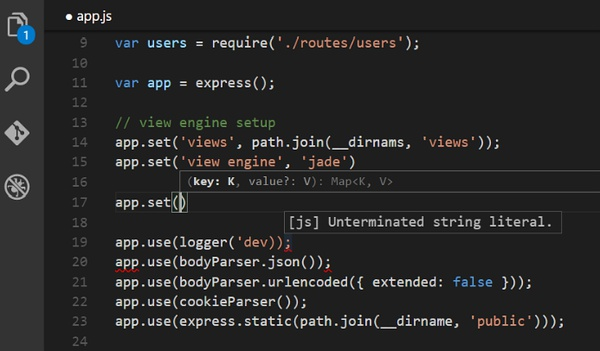

1. 格式化代码
这个快捷键可以帮助我们对代码进行锁进。
在 Windows 上：Shift + Alt + F
在 Mac 上：Shift + Option + F
在 Ubuntu 上：Ctrl + Shift + I
注：可以在编码的任何时候使用它，但是在代码编写完成的时候用这个格式化一下代码会更好。
2. 向上/向下 复制行
在 Windows 上：Shift + Alt + Up/Down
在 Mac 上：Shift + Option + Up/Down
在 Ubuntu 上：Ctrl + Shift + Alt + Up/Down
3 .单词选中
在 Windows 上：Ctrl+ d
在 Mac 上： Command + d
在 Ubuntu 上： Ctrl+ d,
如果你多次点击此快捷键，将会选中多个相同的关键字。
4. 打开关闭侧边栏
在 Windows 上：Ctrl+ b
在 Mac 上：Command + b
在 Ubuntu 上：Ctrl+ b,
有时候，文件里面的代码宽度比较大，关闭侧边栏可以有更大的代码可视范围。